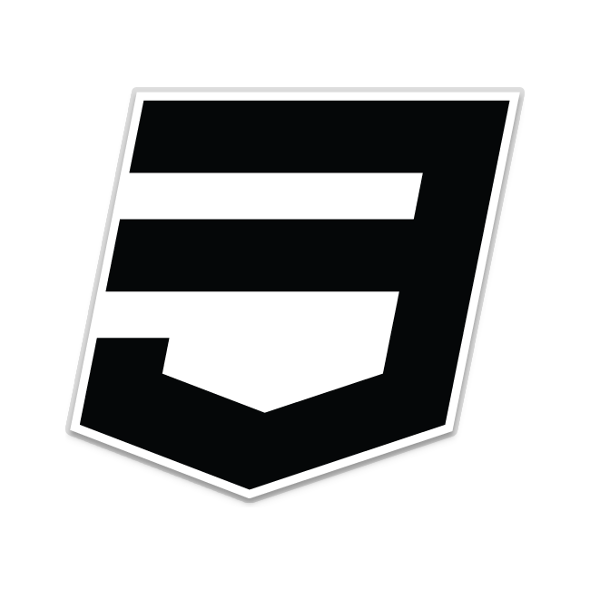
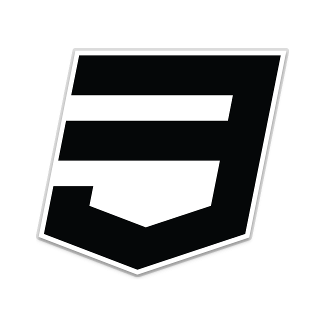

My Slides
Repúblca Bolivariana de Venezuela
Ministerio del Poder Popular Para la Educación Superior Universitaria
Universidad Nacional Experimental de los Llanos Centrales "Rómulo Gallegos"
Área de Ingeniería en Sistemas
Programa de Ingeniería en Informática
San Juan de los Morros - Estado Guarico
Aplicación Para el Control de Circuitos Eléctricos Mediante Arduino Caso: Direccion de Informatica de la Universidad Nacional Experimental "Romulo Gallegos"
AUTOR:
Marcos Antonio Castellanos Caraballo
TUTOR ACADÉMICO
Ing. Dehivis Perez
TUTOR METODOLÓGICO
Ing. Soleidys Peña
PLANTEAMIENTO DEL PROBLEMA
El factor determinante del problema surge debido a que en distintas partes del departamento de informatica se encuentran equipos informaticos, los cuales quedan a distancias ciertamente restringidas, lo cual imposibilita su contacto o manejo directo.
- Fatiga del trabajador
- Retraso del tiempo laboral de la empresa
- Mayor esfuerzo físico
- Movimientos de traslado innecesarios
INTERROGANTES
- ¿Cuál es factor que se busca optimizar medinte la implementación de la herramienta tecnólogica
- ¿Cuales son las necesidades previas que impulsan el desarrollo de la herramienta tecnólogica
- ¿Cuál es el impacto glogal, finalidad o resultado que se busca mediante la implementacion de la herramienta tecnologica?
OBJETIVOS DE LA INVESTIGACION
OBJETIVO GENERAL
Implementar aplicacion que permita el control total de la electricidad para encender y/o apagar equipos electrónicos que se encuentren dentro de la casa de estudios y hacer funcionamiento de los mismos
OBJETIVOS DE LA INVESTIGACION
OBJETIVOS ESPECIFICOS
- Diagnosticar el proceso tecnológico dentro del DEPARTAMENTO DE INFORMATICA DE LA UNIVERSIDAD NACIONAL EXPERIMENTAL RÓMULO GALLEGOS
- Establecer los requerimientos necesarios suministrados en visitas al área
- Diseñar un componente eléctrico que permita el manejo de la electricidad que lo abastece y a su vez alimenta el área
- Desarrollar el componente que permita el manejo de la electricidad desde cualquier parte del mundo mediante acceso remoto
- Promover el uso de las tecnologias de vanguardia a nivel mundial en ambientes laborales de trabajo, para eliminar el miedo ante la migracion tecnológica pertinente, e impulsar el buen uso del factor tiempo
JUSTIFICACION DE LA INVESTIGACION
Las necesidades que impulsan el desarrollo de esta herramienta, es optimizar el consumo eléctrico dentro del DEPARMENTO DE INFORMATICA, y por ende, sus aŕeas adyacentes, con importancia sobre el factor tiempo del trabajador
ALCANCES DEL PROYECTO TECNOLOGICO
- Manejo electrico
- Ahorro electrico
- Factor tiempo
METODOLOGIA DEL DESARROLLO TECNOLOGICO
M.E.D.S.I
DESCRIPCION DEL SISTEMA ACTUAL
PRESENTACION TECNICA DEL SISTEMA
OBJETIVO GENERAL
PRESENTACION TECNICA DEL SISTEMA
OBJETIVOS ESPECIFICOS
PAQUETES UTILIZADOS EN EL DESARROLLO DE LA HERRAMIENTA TECNOLOGICA


 



PROCESO AUTOMATIZADO POR LA HERRAMIENTA TECNOLOGICA
CONCLUSIONES
- EL resultado de las encuestas realizadas arrojo la exactitud para la elaboracion de la herramienta
- En cuanto a la necesidad tecnológica, se determino que son indispensables las plataformas tanto de hardware como de sofrware para el desarrollo de la herramienta
- Beneficios al momento de la implementacion
- Respuestas rápidas, facilidad de trabajo, adaptación sencilla a plataformas de Software
- Datos confiables, precisos e integridad de los mismos
Slide 14
Slide 15